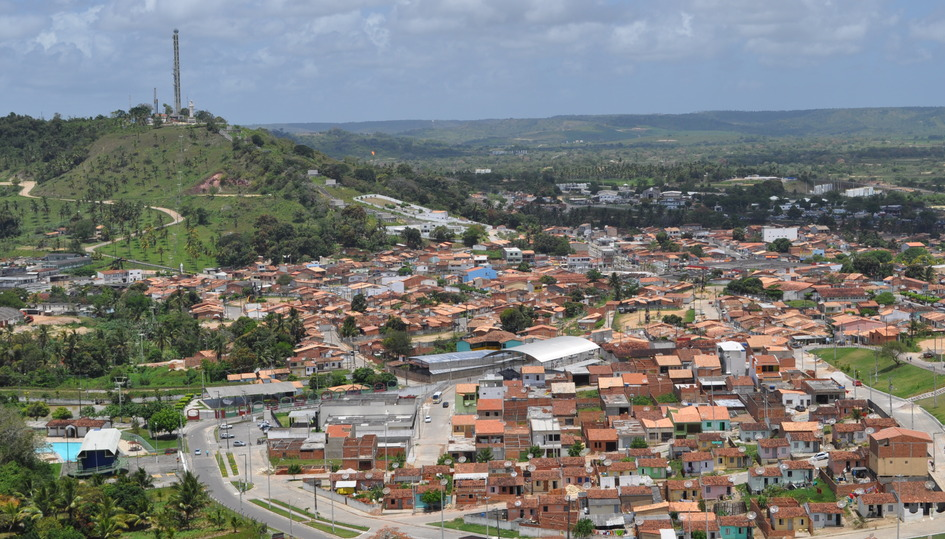

Carmópolis
História
Rancho foi o nome primitivo de Carmópolis. Seu nascimento como povoado data do fim do período Colonial e início do Império resultando de um simples ponto de parada de feirantes; estes aí se reuniam para atravessar em grupo a antiga mata do Bonsucesso, onde havia mocambos de escravos fugidos dos engenhos da Cotinguiba, que com freqüência atacavam os viandantes.
A denominação posterior de Carmo, tem sua origem provável na influência dos Padres Carmelitas da Missão de Japaratuba, os quais, segundo D.Marcos de Souza - Memória da Capitania de Sergipe - 1808, visitaram "as correntes dos dois famosos Japaratuba, dos dois deliciosos Lagartixos e do puro Siriry. Todos estes rios deságuam no mar, quatro léguas abaixo da Missão de Nossa Senhora do Carmo".
Do magnífico subsídio de D.Marcos de Souza à História de Sergipe, em que localizava a "Missão de Nossa Senhora do Carmo" quatro léguas acima da atual povoação de Pirambu, na barra do Japaratuba, tira-se a conclusão de que nenhuma dúvida pode ser suscitada quanto à passagem dos Carmelitas por Carmópolis, quando a atual cidade não passava de incipiente povoação. Data dessa época a construção da Igreja de Santana do Massacará, situada a pequena distância de Carmópolis O Município, criou-o a Lei estadual n.° 795, de 23 de outubro de 1920, com território desmembrado do de Rosário; a criação do distrito deve-se à de n.° 819, de 7 de novembro de 1921. Instalado em 1.° de janeiro de 1923, figura o Município de Carmo, em 1933, com um só distrito. Decreto-lei estadual n.° 377, de 31 de dezembro de 1943, modificou para Carmópolis o topônimo do Município e do distrito. Até a presente data permanece o Município de Carmópolis com o distrito único da sede.
fonte: https://www.carmopolis.se.gov.br/Pontos Turísticos
Arcos da Orla de Atalaia
Com uma cultura tradicional e que já é destaque no cenário nacional, o Monte Carmelo, na cidade de Carmópolis, distante 47 Km da capital, se transformou no Complexo Turístico Religioso Monte Carmelo. O Monte Carmelo conta com um restaurante, lojas de artesanato, altar, parque infantil, velário, projeto paisagístico, iluminação temática, estações da Via Sacra e também uma grande imagem de Nossa Senhora do Carmo, a padroeira do município, em uma estrutura com mais de 30 metros de altura, tudo isso em uma extensa área com 7.700m².
Dados Gerais de acordo com o IBGE
| Prefeito (a) | Esmeralda Mara Silva Cruz |
| Vice-Prefeito (a) | Hyago Silva Cruz |
| Site do município | https://www.carmopolis.se.gov.br/ |
| Área territorial | 46,395 km² |
| População estimada | 17.232 pessoas |
| Densidade demográfica | 294,15 hab/km² |
| IDHM | 0,643 |
| PIB per capita | R$ 27.566,67 |